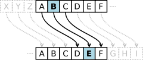

<!DOCTYPE html>
<html lang="pl">
<head>

	<meta charset="utf-8">
	<title>Projekt Gimnazjalny</title>
	<meta name="description" content="Projekt Gimnazjalny">
	<meta name="keywords" content="Projekt Gimnazjalny">
	<meta name="author" content="Uczestnicy Projektu Gimnazjalnego">
	
	<meta http-equiv="X-Ua-Compatible" content="IE=edge,chrome=1">
	
	<link rel="stylesheet" href="main.css">
	<link rel="stylesheet" href="css/fontello.css">
	<link href="https://fonts.googleapis.com/css?family=Open+Sans:400,700&amp;subset=latin-ext" rel="stylesheet">
	
	<meta name="viewport" content="width=device-width, initial-scale=1">
<link rel="stylesheet" href="https://www.w3schools.com/w3css/4/w3.css">
	
	<!--[if lt IE 9]>
	<script src="//cdnjs.cloudflare.com/ajax/libs/html5shiv/3.7.3/html5shiv.min.js"></script>
	<![endif]-->
	
	<!-- Tak się robi zdjęcia - 
		 Paragrafy znacznikiem <p></p>
		 Więcej se wyguglajcie-->
	
	
	
</head>

<body>

	<header>
	
		<h1 class="logo">Projekt Gimnazjalny</h1>
		
		<nav id="topnav">
		
			<ul class="menu">
				<li><a href="index.html">Strona główna</a></li>
				<li><a href="szyfry.html">Szyfry</a></li>
				<li><a href="sortowanie.html">Sortowanie</a></li>
				<li><a href="algorytm.html">Algorytmy</a></li>
			</ul>
			
		</nav>
	
	</header>
	
	<main>
	
		<article>
			
			<section id="newest">
				
				<div class="entries">
				
					<h1>
						Algorytmy szyfrujące
					</h1>
					
					
					
					
					
					
					
					
					
					
					<!-- szyfr cezara - Szymon -->
					<h2>
						Szyfr cezara
					</h2>
					
					<p>
						Szyfr cezara jest jednym z najstarszych szyfrów znanych ludzkości. Tak jak nazwa wskazuje, korzystał z niego sam Juliusz Cezar, najsłynniejszy rzymski władca. O dziwo, wykorzystywał go jedynie w prywatnej korespondencji, a nie w przesyłaniu rozkazów wojskowych lub politycznych. Szyfr polega na zamianie każdej litery o daną liczbę w alfabecie(przeskok). W przypadku Cezara były to trzy. W ten sposób 'a' zmieniało się w 'd', 'b' w 'e', 'c' w 'f' i tak dalej. Ten szyfr można stosować przy takim przeskoku jakim się chce, nawet większym niż 26, bo wtedy bierze się po prostu resztę z dzielenia przez 26.								</p>
					
					<p>
						'lubieplacki' przeskok 3 --> 'oxelhsodfnl'
					</p>
					
					<div class="entry">
						<div class="entrytxt">
							<h3>
<pre>
def koduj(slo, il):
 wyn=''
 il%=26
 
 for i in range(len(slo)):
 wyn+=chr(((ord(slo[i])-97+il)%26)+97)
 
    return wyn
</pre>
 							</h3>
 						</div>
 					</div>
					
					<!-- obrazek -->
					
					
					
					<!-- algorytm szyfrujący -->
					<p>Słowo składające się z małych liter</p>
						<input placeholder="Słowo" type="text" id="slowo" value="" class="w3-input" type="text" style="width: 300px; margin-left: auto; margin-right: auto;">
						<p>Przeskok(nieujemny)</p>
						<div><input placeholder="Liczba" type="text" id="il" value="" class="w3-input" type="text" style="width: 300px; margin-left: auto; margin-right: auto;"><label for="il"></label></div>
						<button onclick="cezar()"> Zaszyfruj </button>
						<p id="odp"><br></p>
						
						
						
						<script>String.prototype.replaceAt=function(index, replacement) {
							return this.substr(0, index) + replacement+ this.substr(index + replacement.length);
						}
						var slo, x, wyn, r=0,odp;
						odp=document.getElementById('odp');
						function rec(ide) {
							if(ide>=r) {
								return;
							}
							console.log(String.fromCharCode((wyn.charCodeAt(ide)+x-97)%26+97))
							wyn=wyn.replaceAt(ide,String.fromCharCode((wyn.charCodeAt(ide)+x-97)%26+97));
							odp.innerHTML=wyn;
							setTimeout(function() {rec(ide+1);},1000);
						}

						function cezar() {
							slo = document.getElementById("slowo").value;
						    x = Number(document.getElementById("il").value);
						    r=slo.length;
						    wyn = slo;
							odp.innerHTML=wyn;
							setTimeout(function(){rec(0);},1000);						}
						</script>
						
					
					
					
					
					
					
					
					
				<!-- szyfr vigener'a - miłosz -->
				<!--xmlns="http://www.w3.org/1999/xhtml" -->
				<h2>Szyfr Vigenère’a</h2>
				
				<p>
				Szyfr Vigenère’a, znany również jako algorytm Vigenère’a, wbrew pozorom nie został wymyślony przez Blaise'a de Vigenère. We właściwej formie przedstawił go tak naprawdę Giovana Batista Belaso w XVI wieku. Działanie szyfru jest poniekąd rozszerzeniem pokazanego wcześniej szyfru Cezara. Każdą literę przetwarzanego tekstu poddajemy szyfrowi Cezara, gdzie przeskoki są oznaczone kolejnymi literami klucza (a=0, b=1, c=2, ...). Jeśli klucz jest krótszy od szyfrowanego tekstu, zapętlamy go. Szyfr Vigenère’a jest łatwy w użyciu, ale ciężko go złamać, co dało mu francuski przydomek <em>le chiffre indéchiffrable</em>, co znaczy "szyfr niemożliwy do odczytania".	</p>
				
				<div class="entry">
					<div class="entrytxt">
						<h3>
<pre>
def szyfruj(klucz,tekst):
    wynik = ""
    klucz_numeryczny = []
    for i in range(len(klucz)):
        zx=ord(klucz[i])
        if chr(zx).lower() != chr(zx).upper():
            klucz_numeryczny.append((zx-65)%32)
    j=0
    for i in range(len(tekst)):
        zx=ord(tekst[i])
        if chr(zx) == chr(zx).upper():
            wynik += chr((zx-65+klucz_numeryczny[j%len(klucz)])%26+65)
            j+=1
        elif chr(zx) == chr(zx).lower():
            wynik += chr((zx-97+klucz_numeryczny[j%len(klucz)])%26+97)
            j+=1
        else:
            wynik += tekst[i]
    return wynik
</pre>
						</h3>
					</div>
				</div>	
				
				<p>
						<label for="key">Klucz:</label>
						<input placeholder="Słowo" type="text" id="key" value="" class="w3-input" type="text" style="width: 300px; margin-left: auto; margin-right: auto;">
						<label for="text">Tekst:</label>
						<input placeholder="Słowo" type="text" id="text" value="" class="w3-input" type="text" style="width: 300px; margin-left: auto; margin-right: auto;">
						<input type="button" value="Zaszyfruj" onclick="doCrypt(false)" />
						<p><br></p>
						<label for="result">Wynik:</label></td>
						<input placeholder="" type="text" id="result" value="" class="w3-input" type="text" style="width: 300px; margin-left: auto; margin-right: auto;">
				<script>
					function doCrypt(isDecrypt) {
						if (document.getElementById("key").value.length == 0) {
							alert("Klucz jest pusty!");
							return;
						}
						var key = filterKey(document.getElementById("key").value);
						if (key.length == 0) {
							alert("Klucz nie zawiera liter!");
							return;
						}
						if (isDecrypt) {
							for (var i = 0; i < key.length; i++)
								key[i] = (26 - key[i]) % 26;
						}
						var textElem = document.getElementById("result");
						var b = document.getElementById("text");
						textElem.value = crypt(b.value, key);
						document.getElementById("result").readOnly = true;
					}
					
					function crypt(input, key) {
						var output = "";
						for (var i = 0, j = 0; i < input.length; i++) {
							var c = input.charCodeAt(i);
							var zx = String(input.charAt(i));
							if (isUppercase(zx)) {
								output += String.fromCharCode((c - 65 + key[j % key.length]) % 26 + 65);
								j++;
							} else if (isLowercase(zx)) {
								output += String.fromCharCode((c - 97 + key[j % key.length]) % 26 + 97);
								j++;
							} else {
								output += input.charAt(i);
							}
						}
						return output;
					}
					
					function filterKey(key) {
						var result = [];
						for (var i = 0; i < key.length; i++) {
							var c = key.charCodeAt(i);
							var zx = String(key.charAt(i));
							if (isLetter(zx))
								result.push((c - 65) % 32);
						}
						return result;
					}
					
					function isLetter(zx) {
						return /^[a-zA-Z]+$/.test(zx);
					}
					
					function isUppercase(zx) {
						return zx == zx.toUpperCase() && isLetter(zx);
					}
					
					function isLowercase(zx) {
						return zx == zx.toLowerCase() && isLetter(zx);
					}
				</script>
				
				
				
				
				
				
				<!-- szyfr ślimakowy - antek f -->
				<header>
					
						<h1>Szyfr Ślimakowy</h1>
						<p>Szyfr Ślimak to sprytny sposób na ukrycie tajnej informacji. Jednak ze względu na fakt, że tylko przestawia litery i są fragmenty ustawione jak w tekście szyfrowanym powoduje, ze szyfr ten bardzo łatwo złamać. Inspiracją do stworzenia tego szyfru był niewątpliwie ślimak, a konkretniej linie na jego skorupie.</p> 
						<p>Tekst, który szyfrujemy zapisujemy spiralnie w kwadratowej tabelce w razie potrzeby dopełniając znakiem "-". Następnie szyfrogram odczytujemy odczytując kolejne pełne wiersze z powstałej tabelki.</p>
						<p>W naszym wariancie spirala rozpoczyna się w lewym górnym rogu i jest prawoskrętna. Dodatkowo jej bok ma zawsze nieparzystą długość, aby spirala jak najbardziej przypominała skorupę ślimaka.</p>
					</header>	

					<button id="submitek" onclick="szyfrSlimakowy()">Zaszyfruj</button>
					<input placeholder="Słowo" type="text" id="tekst" value="" class="w3-input" type="text" style="width: 300px; margin-left: auto; margin-right: auto;">
					<p id="wynik"><br></p>
					
					<div class="entry">
						<div class ="entrytxt">
							<p>
<pre>
def szyfrSlimakowy(text)
	n=0
	wynik=""
	index=0
	i=1
	while i*i<len(text) or i%2==0:
		i+=1
		
	n=i;
	while len(text)<n*n:
		text+="-"
			
	for i in range(n):
		for j in range(n):
			if i<=j and i<=n-i-1 and i<=n-j-1:
				index=len(text)-((n-2*i-1)*(n-2*i)+(n-2*i)-(j-i));

			if j<i and j<=n-i-1 and j<=n-j-1:
				index=len(text)-((n-2*j-1)*(n-2*j)-(n-2*j-1)*2-(n-i-2-j));
				
			if n-j-1<=j and n-j-1<=n-i-1 and n-j-1<=i:
				index=len(text)-((n-2*(n-j-1)-1)*(n-2*(n-j-1))-(i-(n-j)));
				
			if n-i-1<=j and n-i-1<n-j-1 and n-i-1<=i:
				index=len(text)-((n-2*(n-i-1)-1)*(n-2*(n-i-1))-(n-2*(n-i-1)-1)-((n-j-1)-(n-i)));

			wynik+=text[index];

	return wynik
</pre>
							</p>
						</div>
					</div>
					
				
					<script>
							function szyfrSlimakowy()
							{
								var text=document.getElementById("tekst").value;
								var n=0;
								var wynik="";
								var index=0
								var i=1;
								while (i*i<text.length || i%2==0)
								{
									i++;
								}
								n=i;
								while (text.length<n*n)
								{
									text+="-";
								}
								for (i=0; i<n; i++)
								{
									for (j=0; j<n; j++)
									{
										if (i<=j && i<=n-i-1 && i<=n-j-1)
										{
											index=text.length-((n-2*i-1)*(n-2*i)+(n-2*i)-(j-i));
										}
										if (j<i && j<=n-i-1 && j<=n-j-1)
										{
											index=text.length-((n-2*j-1)*(n-2*j)-(n-2*j-1)*2-(n-i-2-j));
										}
										if (n-j-1<=j && n-j-1<=n-i-1 && n-j-1<=i)
										{
											index=text.length-((n-2*(n-j-1)-1)*(n-2*(n-j-1))-(i-(n-j)));
										}
										if (n-i-1<=j && n-i-1<n-j-1 && n-i-1<=i)
										{
											index=text.length-((n-2*(n-i-1)-1)*(n-2*(n-i-1))-(n-2*(n-i-1)-1)-((n-j-1)-(n-i)));
										}
										wynik+=text.charAt(index);
									}
								}
								document.getElementById("wynik").innerHTML=wynik;
							}
							</script>	
					
					
					
					
					
				</div>
				
			</section>

			<section>
				
				<div class="teleport">																																																																																																</p>
						
					<a href="#" class="greenbutton">Teleportuj na góre</a>
				
				</div>
				
			</section>			
		
		</article>
	
	</main>
	
	<footer>
	
		<div class="info">
			Wszelkie prawa zastrzeżone &copy; 2018 Projekt Gimnazjalny
		</div>
	
	</footer>

</body>
</html>